What to drink, what to eat, what to do, and why sleep is the part that actually locks it in — compiled from the field, kept in one place.
← Back to appDaily water intake by body weight, plus the training-day adjustment.
| Body weight | Water / day |
|---|---|
| 60 kg | 2.1 L |
| 70 kg | 2.5 L |
| 80 kg | 2.8 L |
| 90 kg | 3.2 L |
| 100 kg | 3.5 L |
| Training day | +500–750 ml/hr |
Four brain chemicals, and the food each one is actually built from.
~90% is made in the gut, not the brain — what you eat sets the ceiling.
Drives motivation, focus and follow-through. Low dopamine reads as apathy and brain fog.
The brain's primary inhibitory signal — what lets the nervous system switch off.
Governs learning, memory and attention — depleted fast by poor sleep and stress.
Ancient cultures found the nootropic long before supplement stacks existed.
It doesn't just preserve food, it rewrites it — generating molecules absent from the raw ingredient: GABA, antioxidant peptides, anti-inflammatory compounds. Unfermented food cannot replicate this.
Three effects: lowers cortisol (less chronic stress signalling), supports neuroplasticity, and protects neurons from the oxidative degeneration behind memory loss. Not digestion — the brain's defence system.
Across 45 human, animal and cellular studies: reduced stress hormones, improved learning and memory, stabilised brain inflammation, protected neurons from ageing — regardless of whether the food was dairy, soy, rice, garlic, ginseng or vegetables. The benefit is tied to fermentation itself, not the food.
Fermented food was a daily staple for most of human history — kimchi, kefir, miso, sauerkraut, tempeh, yoghurt — until ultra-processed, pasteurised food quietly replaced it, at exactly the time anxiety, depression and cognitive decline skyrocketed.
No supplement stack. One daily serving: a spoonful of sauerkraut, live yoghurt, a glass of kefir, kimchi with dinner, miso before a meal. The microbiome begins shifting within 72 hours. The brain follows.
Quick combo claims — pair these for the stated effect.
The common food isn't always the richest source — lesser-known options can carry several times the nutrients per serving. Approximate, per typical serving/100g — directional, not exact.
| Nutrient | Common source | Lesser-known source |
|---|---|---|
| Potassium | Banana — 358 mg | Dried curry leaves — 1,300 mg |
| Vitamin C | Orange — 53 mg | Gooseberry — 600 mg |
| Calcium | Milk — 125 mg | Moringa leaves — 440 mg |
| Iron | Spinach — 2.7 mg | Sesame — 14.6 mg |
| Magnesium | Almonds — 270 mg | Pumpkin seeds — 590 mg |
95% of your serotonin is produced in your gut. The vagus nerve carries signals directly between your digestive system and your brain, in both directions.
Fermented foods reshape your microbiome; that reshaped microbiome changes what travels up that nerve. Different bacteria, different signals, different neurochemistry.
Every neurotransmitter above has one thing in common: most of it is produced in, or regulated by, the gut. Serotonin, dopamine and GABA all depend on a healthy, diverse gut microbiome to be produced in the quantities the brain needs.
Ultra-processed food, chronic stress and poor sleep destroy that microbiome.
Mood isn't just in your head. It starts in your gut.
There is one more thing every neurotransmitter above depends on: sleep. Eat to support your chemistry during the day. Then give it the overnight reset it needs.
The neurochemicals fermented food generates are consolidated during your deepest sleep cycles — deep sleep amplifies everything your gut produces.
Monthly investment needed to hit a milestone by age 59, at an 8% average return — converted to GBP. $1 ≈ £0.79 — ballpark, not exact, rates move.
| Start age | £250K | £500K | £1M | £2M |
|---|---|---|---|---|
| 18 | £52 | £104 | £209 | £417 |
| 20 | £62 | £123 | £246 | £492 |
| 25 | £94 | £187 | £375 | £750 |
| 30 | £145 | £289 | £579 | £1,158 |
| 35 | £228 | £456 | £912 | £1,823 |
| 40 | £371 | £742 | £1,484 | £2,968 |
| 45 | £641 | £1,282 | £2,565 | £5,129 |
| 50 | £1,255 | £2,509 | £5,018 | £10,036 |
| 55 | £3,505 | £7,010 | £14,019 | £28,039 |
Example — on a £270k mortgage at 5.4% over 35 years, this pays it off 10 years and 11 months faster, and saves approximately £118,503 in interest.
Three main CRAs hold their own version of your credit file, built from data supplied by banks, lenders, local authorities and courts. A lender may only report to one or two — check all three.
You have a legal right to see your credit file for free under the Consumer Credit Act 1974 and UK GDPR — you never need to pay for basic access.
If debt is piling up, get advice before it snowballs — all free, confidential, and independent of who you owe.
Never pay for debt advice when free, regulated options like these exist.
Step-by-step releases and drills — not just facts to know, things to do.
The psoas is the deepest core muscle, running from the lumbar spine through the pelvis to the femur — the bridge between upper and lower body, linking your diaphragm to your pelvis and your body to your emotions.
Under stress it's first to contract, and over time it stays shortened, storing tension and emotional memory. A tight psoas is linked to chronic lower back pain, hip stiffness, shallow breathing and anxiety. Releasing it doesn't just free a muscle — it calms the entire system.
You don't stretch the psoas, you release it.
You should feel subtle pressure and release — never sharp pain. When the psoas relaxes: movement improves, digestion normalizes, circulation increases, healing accelerates.
Five minutes. The simplest pose in yoga — and one of the most underrated tools your body has access to.
A simple bedtime mix some find helps with night awakenings, racing thoughts, and fragmented sleep.
A warm, caffeine-free pumpkin latte before bed — the same "warm drink, calm signal" principle as the deep sleep drink.
The Cut Code: how bodyfat actually gets used in a caloric deficit — a deficit creates the demand, but fat still has to be released.
Deficit → open storage → cleave fat → release into blood → use for energy. Fat loss begins when stored energy becomes available — not when the deficit starts.
Stored bodyfat sits inside fat cells as triglycerides: one glycerol backbone plus three fatty acids. The body can't burn the whole package as-is — it has to unpack it first.
The body tells the fat cell to open storage via catecholamine signaling, lower insulin tone, exercise demand, energy demand, natriuretic peptide signaling, and growth hormone context.
Triglyceride → (ATGL) → diglyceride → (HSL) → monoglyceride → (MGL) → fatty acids + glycerol. Fat has to be cleaved before it can move.
Clenbuterol pushes adrenergic signaling; growth hormone can support lipolysis. But releasing more fat isn't the same as losing more fat. A 14-day human trial on clenbuterol found metabolic rate increased but body composition did not change, with side effects including tremor, cramps, restlessness/anxiety and headache.
The goal is to create conditions where fat release makes sense.
Released fat is not burned fat — fatty acids still have to be transported, delivered to tissue, taken into cells, moved toward oxidation, and used for energy.
Small upgrades to food you already eat — none of them cost more effort.
Three or four eggs, cooked gently, yolk soft, in butter or avocado oil, pasture-raised if you can get them. Same breakfast, far more out of it.
Everyday items that may be quietly increasing disease risk. None will harm you from a single exposure — the risk is cumulative.
| Item | The issue | Swap |
|---|---|---|
| Ultra-processed foods | Additives, emulsifiers and oxidised seed oils drive inflammation & oxidative stress. | Whole, single-ingredient foods. |
| Plastic containers | Heating/storing food in plastic can leach BPA and phthalates. | Glass or stainless steel containers. |
| Non-stick pans | Older cookware can release PFAS ("forever chemicals") when heated. | Cast iron, stainless steel, or ceramic. |
| Aluminium foil | Acidic/salty foods can pull aluminium into food. | Parchment paper or glass baking dishes. |
| Refined cooking oils | Canola, soybean and vegetable oils oxidise easily when heated. | Cold-pressed olive oil, avocado oil, grass-fed butter. |
| Canned food | Many can linings still contain BPA or similar chemicals. | Glass-jarred alternatives or fresh whole foods. |
| Scented candles | Paraffin wax plus synthetic fragrance can emit benzene and toluene. | Beeswax or coconut wax candles with essential oils. |
| Plastic chopping boards | Every knife cut sheds microplastics directly into food. | Wooden or bamboo boards. |
None of these items will harm you in a single exposure. The risk is cumulative — the same sources, repeated daily, for years. Start with one. Then another.
Homocysteine is an amino acid that builds up in your blood when methylation slows down. When it climbs, it's been linked to real damage to your arteries and brain — yet it's rarely on a standard panel.
Why it matters — up to 60% of the population carries a gene variant (MTHFR) that can reduce how well they clear homocysteine. Most have no idea, because their standard panel looks completely normal.
The gap that gets missed — optimal homocysteine is around 7 or below, but most labs only flag it above 15. That gap is exactly where quiet damage can build while the report still says "normal."
Dozens of the most important markers work like this: a "normal" range and an optimal range that aren't the same.
Ask specifically for a homocysteine test — it isn't automatic. And for any bloodwork marker, ask what the optimal range is, not just whether you fall inside "normal."
Deficiency symptoms include breathlessness, pale skin, tingling and numbness, and loss of energy and weakness.
Found in animal products — meat, fish, cheese — and fortified cereal; not found in virtually all vegetables, so strict vegetarians and vegans may be at higher risk of deficiency.
To be absorbed, B12 needs to be extracted from food by intrinsic factor, a protein produced by the stomach's parietal cells. Reduced intrinsic factor causes deficiency and a condition called pernicious anaemia. Crohn's and coeliac disease can also lead to B12 deficiency.
The "sunshine vitamin" comes in two forms: D2, found in food, and D3, formed when cholesterol in the skin reacts to UV light — which makes D3 technically a steroid hormone.
Vitamin D is essential for absorbing calcium and phosphorus, and supports immune function, muscle contraction, heart function and blood pressure regulation. A lack of it can lead to rickets in children and osteoporosis in adults.
Mechanically — steroids are cholesterol-derived hormones that pass into cells and change gene expression; they tend to force physiology. Peptides are amino acid chains that bind receptors and trigger signaling cascades; they tend to guide physiology.
In approach — pharmaceuticals largely manage downstream damage: wait until something breaks, then blunt the signal. Peptides operate upstream, at the level of cellular communication.
Why they're growing — the peptide therapeutics market was valued at $42.8 billion in 2023, projected to hit $106 billion by 2033 (10.8% CAGR).
Why "side effects" happen — usually not because peptides are inherently dangerous, but because the protocol is wrong: dose too high too fast, wrong timing, no cycling, no foundation, poor product quality.
Copper sits at the core of enzymes involved in collagen production, antioxidant defenses, and mitochondrial metabolism. Natural GHK-Cu levels decline with age, falling over 50% between ages 20 and 60.
The catch — you can't just give the body free copper; free copper ions can accelerate oxidative stress and cellular aging. GHK-Cu solves this: the tripeptide acts as a molecular chaperone that safely carries copper into cells, releasing it exactly where needed.
Small, slightly odd daily habits — each tied to a specific mechanism, not just a vibe.
Quick symptom → food lookup. Simple pairings, not prescriptions.
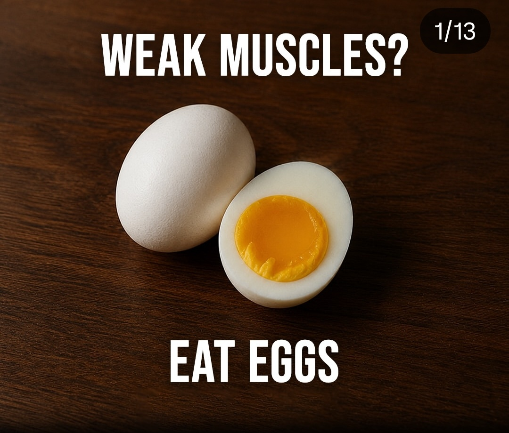
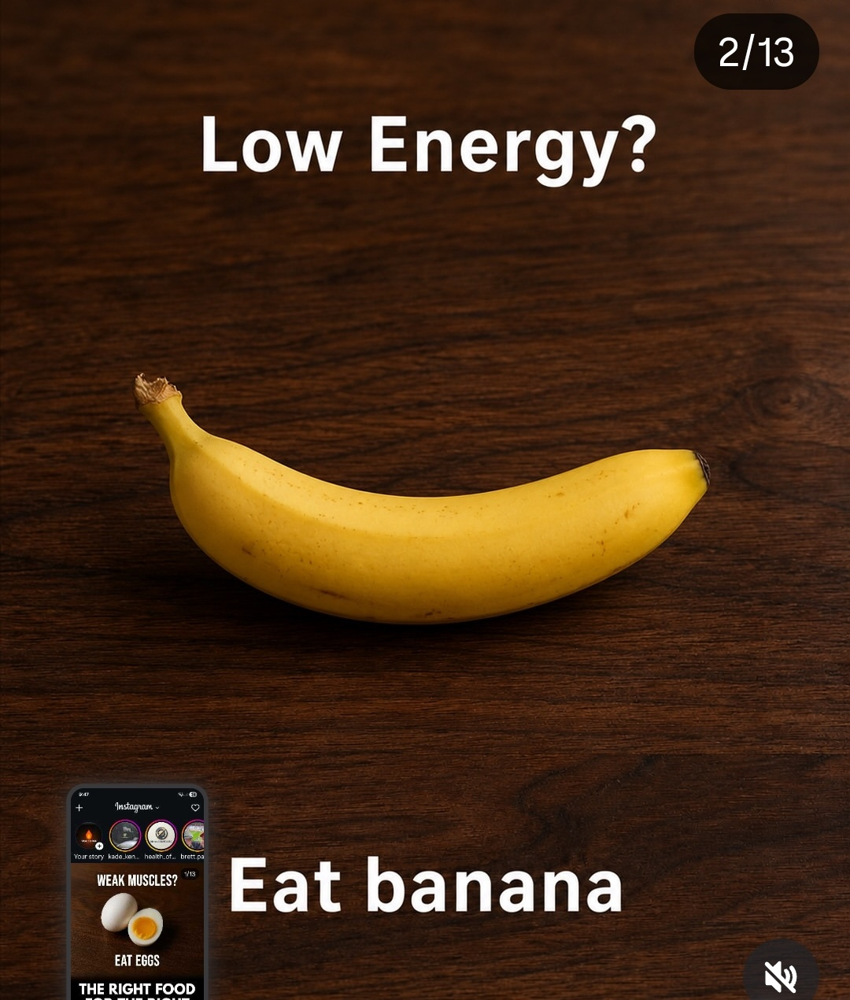
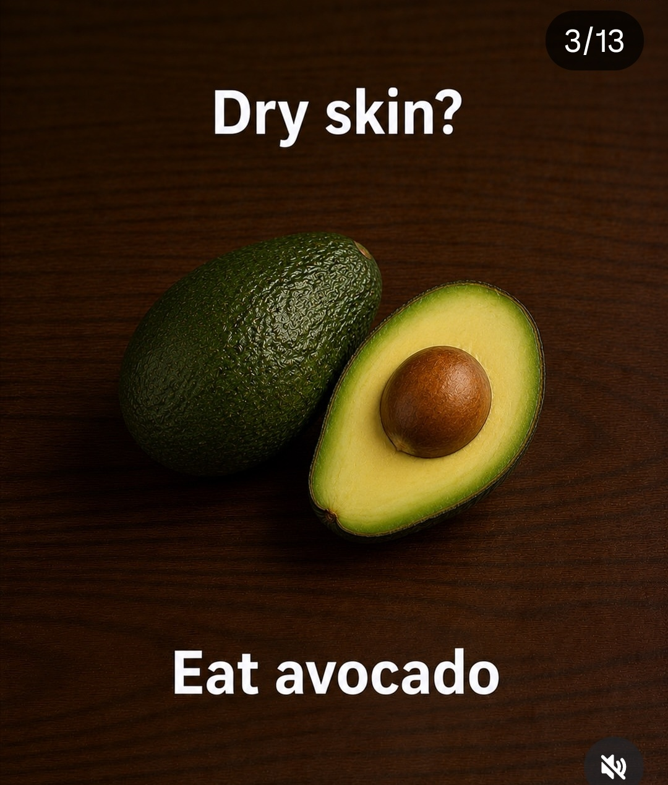
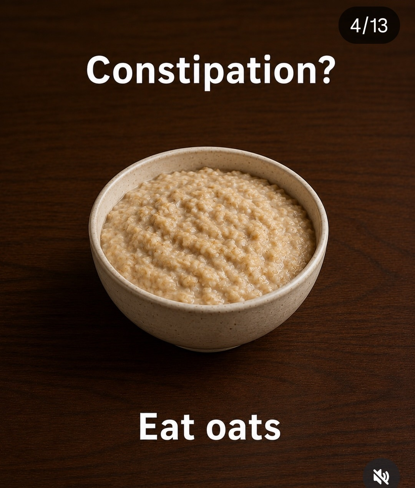
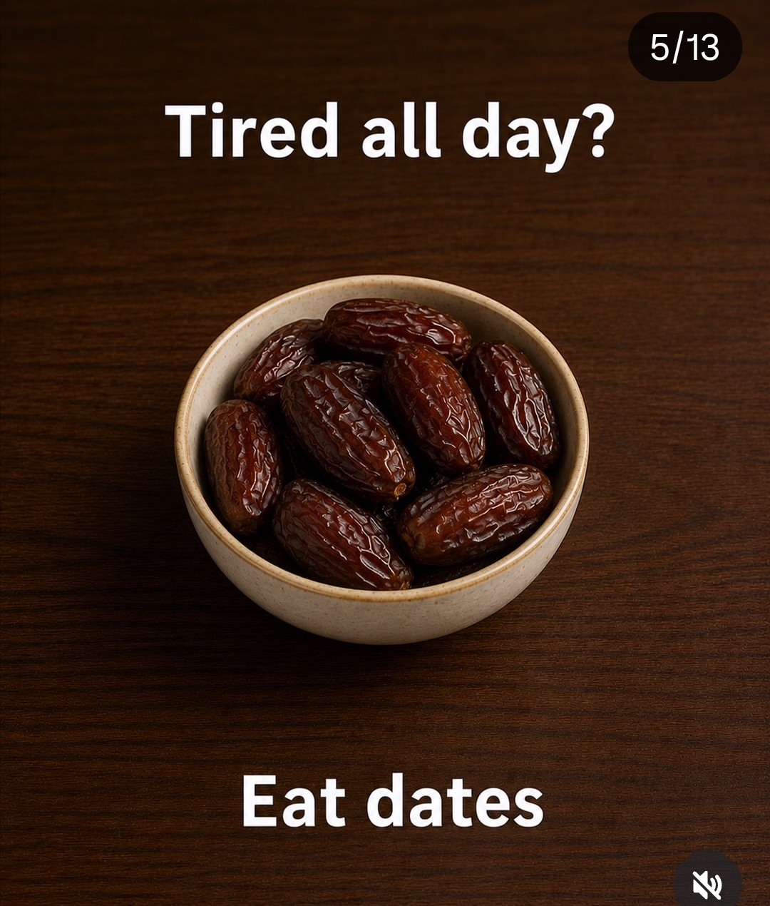
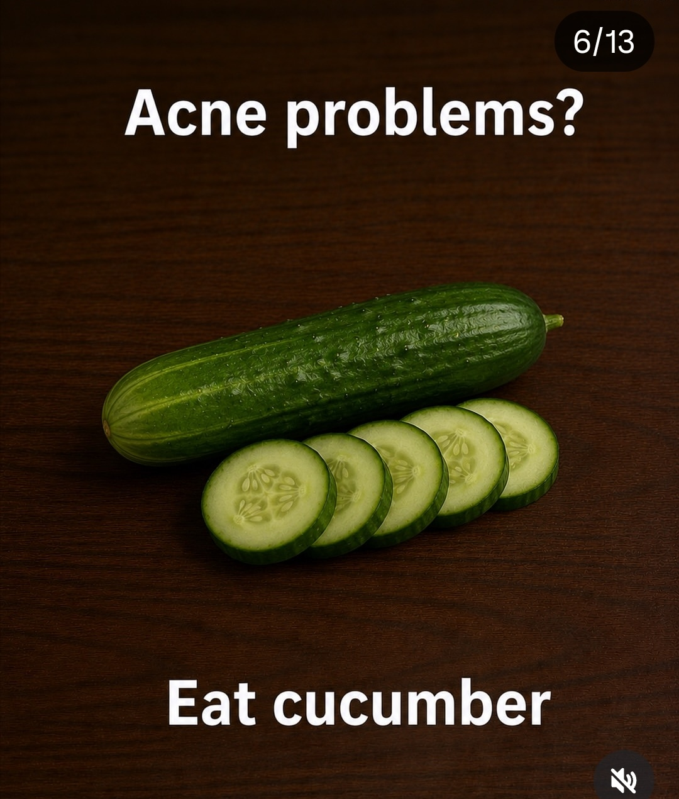
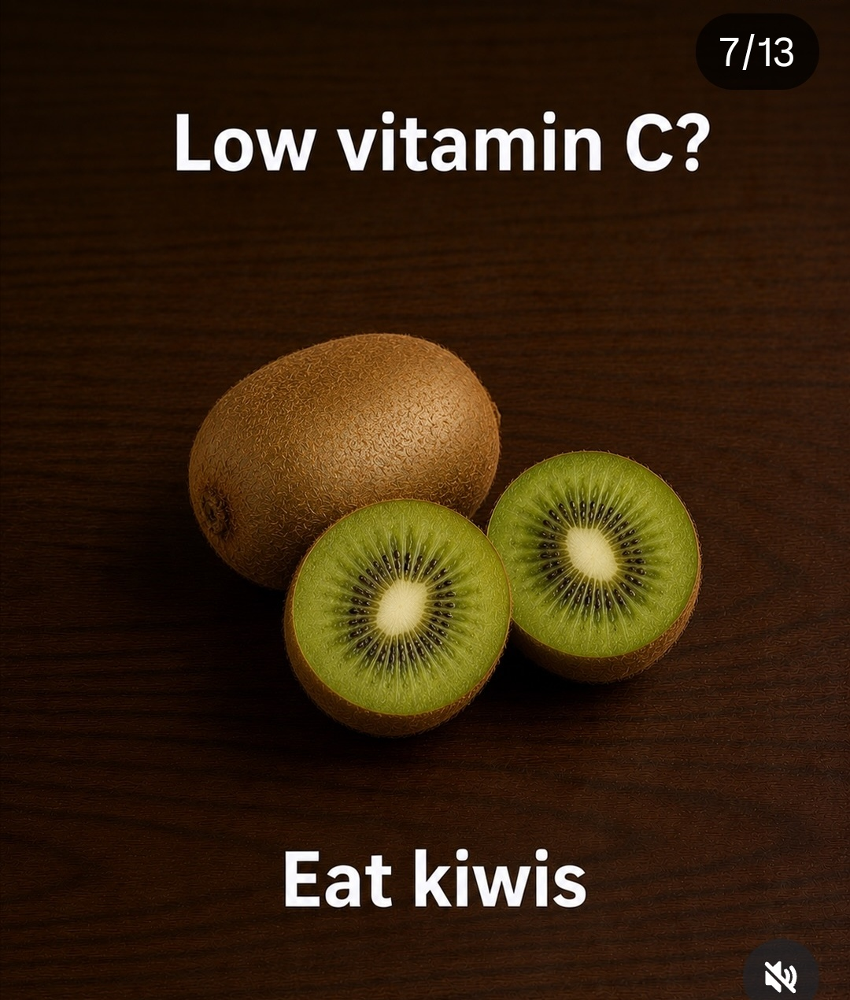
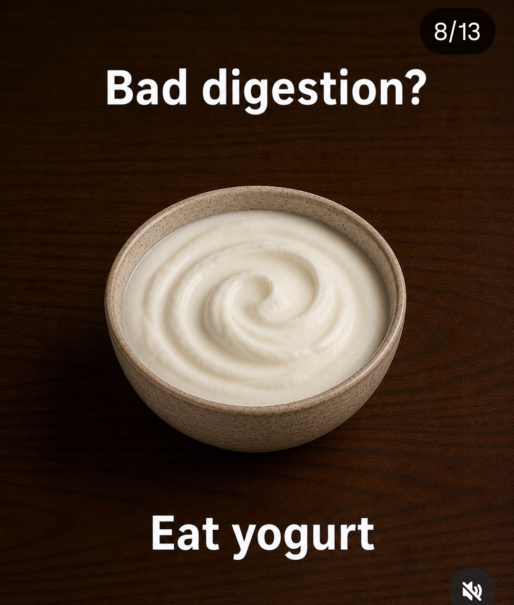
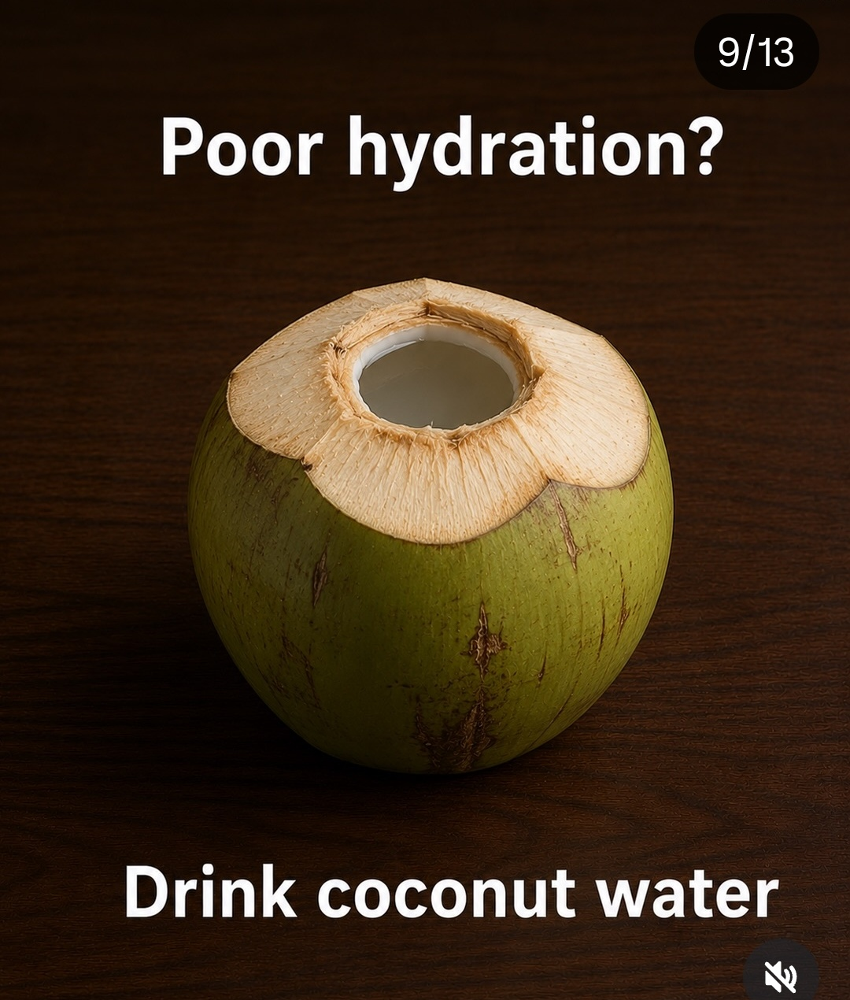
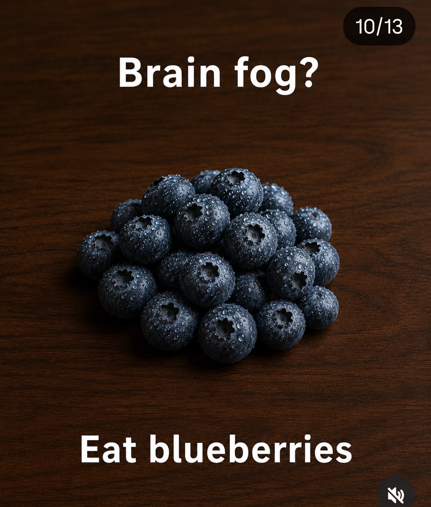
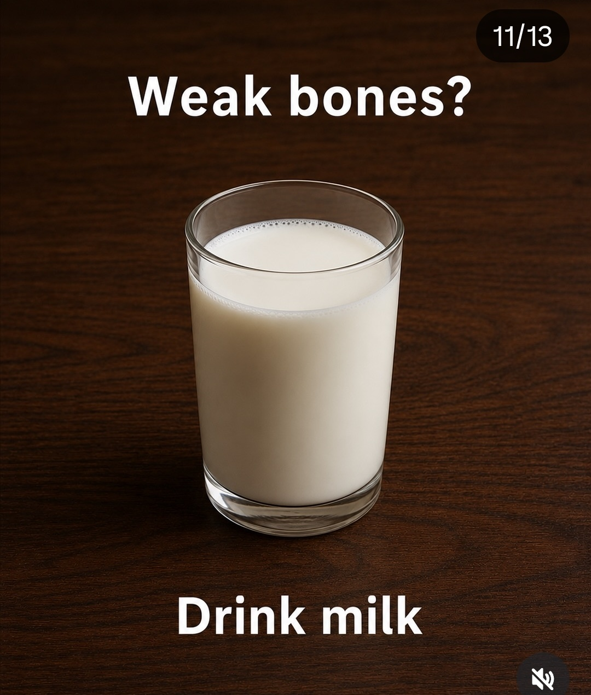
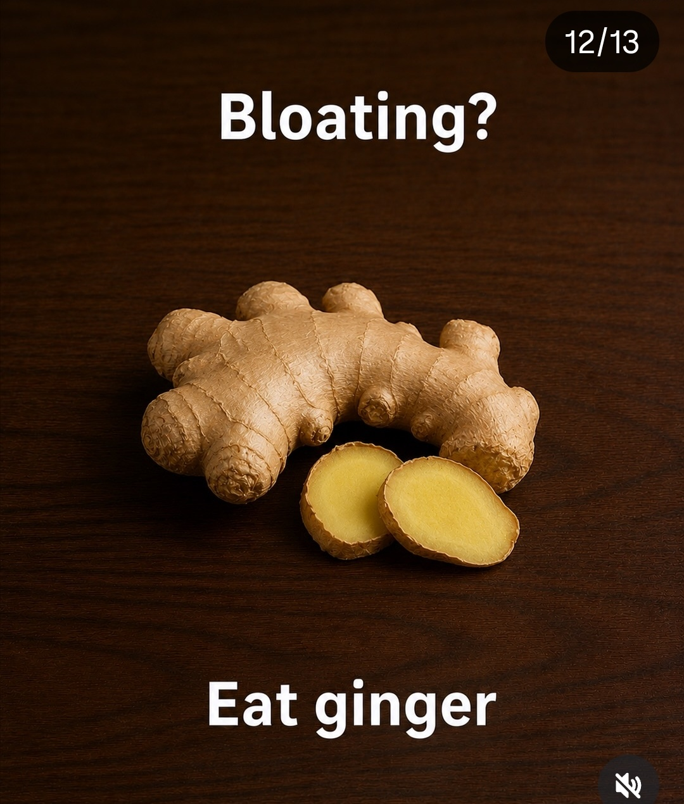
Trap to Fire — field notes, compiled for reference. Sources credited per section.
Not medical, financial, or professional advice — for education only.